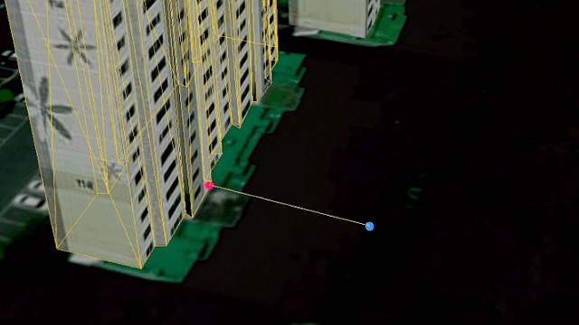
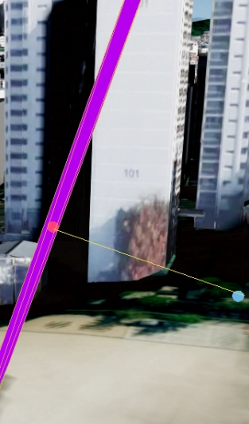
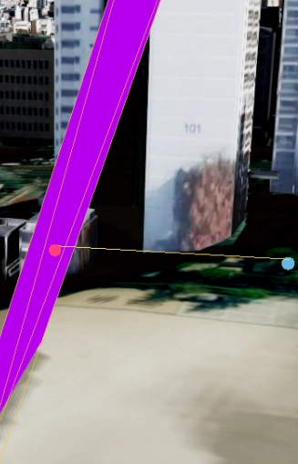

점 스냅
목차
점 스냅은 입력한 좌표를 mesh 표면에서 가장 가까운 점으로 보정해 월드 좌표로 돌려주는 유틸 함수입니다.

- mesh: 3D 객체의 표면을 이루는 삼각형 집합입니다.
UMesh,UU3fMesh,UWfsMesh, 3D Tiles 등이 모두 mesh 기반 객체입니다.- 스냅(snap): 대략적인 입력 좌표를 실제 면 위의 점으로 자동 보정하는 동작입니다.
- 법선(normal): 면이 향하는 방향을 나타내는 벡터입니다. 스냅된 지점에 객체를 세우거나 방향을 맞출 때 사용합니다.
- 폴백(fallback): 요청한 방식으로 처리할 수 없을 때 다른 방식으로 대신 처리하는 것입니다.
1. 점 스냅 시작하기
지하 배관이나 선로 같은 시설물, 건물 표면의 특정 지점은 사용자가 정밀하게 클릭하기 어렵습니다.
점 스냅을 사용하면 대략적인 위치를 입력해도 실제 면 위의 점으로 자동 보정되므로, 시설물 표면에 점을 안정적으로 배치할 수 있습니다.
스냅 함수는 GeOnDT.util 네임스페이스로 제공되며 mesh 기반 객체 어디에나 사용할 수 있습니다.
API
GeOnDT.util.SnapPointToMesh(mesh, geo, options) : 위경도 좌표를 월드 좌표로 변환한 뒤 mesh 표면으로 스냅하는 함수
매개변수
mesh(Mesh) : 스냅 대상 mesh.UMesh,UU3fMesh,UWfsMesh, 3D Tiles 등을 사용. 필수geo(GeoPosition) : 위경도 좌표.{ x: 경도, y: 위도, z: 높이 }형식이며 높이를 생략하면 0으로 처리. 필수options(object) : 스냅 옵션. 생략 가능. 자세한 항목은 스냅 방식 설정하기 참고
반환값
return(SnapResult | null) : 스냅 결과 객체. 유효한 면을 찾지 못하면null
API
GeOnDT.util.SnapWorldPointToMesh(mesh, worldPoint, options) : 이미 월드 좌표로 변환된 점을 그대로 스냅하는 함수
매개변수
mesh(Mesh) : 스냅 대상 mesh. 필수worldPoint(Vector3) : 월드(Mercator) 좌표. 필수options(object) : 스냅 옵션. 생략 가능
반환값
return(SnapResult | null) : 스냅 결과 객체. 유효한 면을 찾지 못하면null
1. 기본 사용 예제
대상 mesh는 보통 U3dSelect로 선택하거나, 클릭한 객체를 그대로 사용합니다.
// 월드 좌표를 위경도 좌표로 변환합니다.
const geo = GeOnDT.UMathEngine.getGoogleToGeographic(wx, wy, wz);
// 스냅을 실행합니다.
const result = GeOnDT.util.SnapPointToMesh(targetMesh, geo);
// 스냅에 실패하면 null이 반환되므로 결과를 먼저 확인합니다.
if (result) {
console.log(result.position); // 스냅된 월드 좌표
console.log(result.faceIndex); // 스냅된 면 인덱스
console.log(result.distance); // 입력점과 스냅점 사이의 거리
}
2. 스냅 방식 설정하기
스냅 방식은 options.lockHeight로 결정합니다.
false로 두면 mesh 표면에서 입력점과 가장 가까운 점을 찾아 스냅합니다.
높이도 함께 바뀝니다.
true로 두면 입력한 높이를 유지한 채 수평 방향으로만 스냅합니다.
입력 높이의 단면이 허용 거리 안에 있으면 그 높이로 수평 스냅하고, 단면이 없거나 허용 거리를 벗어나면 높이 고정을 풀고 3D 스냅으로 폴백합니다.
API
매개변수
options.lockHeight(boolean) : 높이 고정 여부.true면 수평 방향으로만 스냅. 기본값:falseoptions.lockHeightMaxDistance(number) : 높이 고정을 허용할 최대 거리(m). 입력 높이의 단면이 이 거리 안에 있을 때만 높이를 고정하고, 초과하면 3D 스냅으로 폴백
lockHeightMaxDistance를 지정하지 않으면 대상에 따라 다르게 동작합니다.
선로나 배관처럼 group과 _BATCHID가 없는 단일 mesh는 기본값 50m가 적용되고,
격리 키가 있는 건물이나 3D Tiles는 거리 제한 없이 해당 객체 범위에서 단면을 찾습니다.
1. 높이 고정 스냅 예제
// 입력 높이를 유지한 채 수평으로만 스냅합니다.
const flat = GeOnDT.util.SnapPointToMesh(targetMesh, geo, {
lockHeight: true
});
2. 허용 거리 지정 예제
// 높이 고정 단면이 30m 이내일 때만 높이를 고정하고, 초과하면 3D 스냅으로 폴백합니다.
const result = GeOnDT.util.SnapPointToMesh(targetMesh, geo, {
lockHeight: true,
lockHeightMaxDistance: 30
});
3. 높이 고정 결과 비교
같은 지점을 입력해도 허용 거리 안에 단면이 있는지에 따라 결과가 달라집니다.
입력점과 스냅점을 잇는 선이 수평이면 높이 고정이 적용된 것이고, 비스듬하면 3D 스냅으로 폴백된 것입니다.


3. 스냅 결과 확인하기
스냅에 성공하면 SnapResult 객체를 반환하고, 유효한 면을 찾지 못하면 null을 반환합니다.
결과를 사용하기 전에 null 여부를 먼저 확인해야 합니다.
API
반환값
position(Vector3) : 스냅된 최종 월드 좌표normal(Vector3) : 스냅된 면의 법선 벡터faceIndex(number) : 스냅된 면(삼각형)의 인덱스distance(number) : 입력점과 스냅점 사이의 거리. 높이를 고정한 경우 두 점의 높이가 같으므로 수평 거리lockHeightApplied(boolean) : 높이 고정이 실제로 적용되었는지 여부.false면 단면이 없거나 허용 거리를 초과해 3D 최단점으로 폴백된 상태
1. 폴백 여부 확인 예제
높이 고정을 요청했더라도 실제로 적용되지 않을 수 있으므로, lockHeightApplied로 결과를 확인합니다.
const result = GeOnDT.util.SnapPointToMesh(targetMesh, geo, {
lockHeight: true,
lockHeightMaxDistance: 30
});
if (result) {
if (result.lockHeightApplied) {
console.log('높이를 유지한 채 수평으로 스냅되었습니다.');
} else {
console.log('허용 거리 안에 단면이 없어 3D 최단점으로 스냅되었습니다.');
}
}